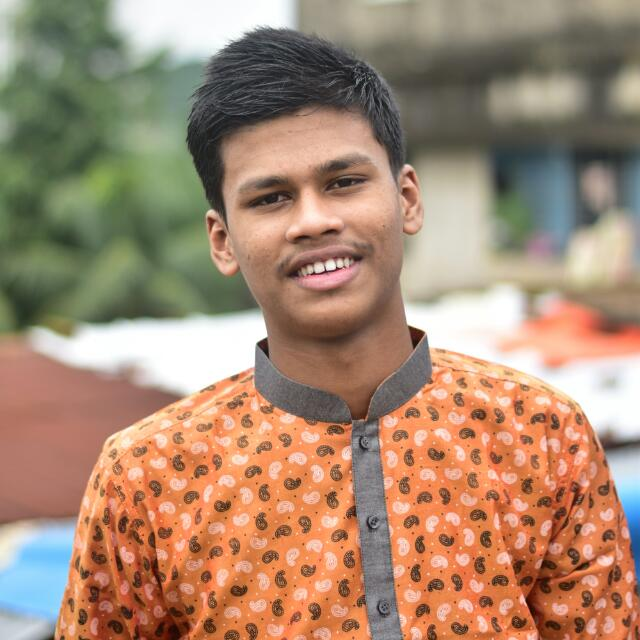

| Home | Paragraph | About us | Biography | FAQ |
About Us
I am Aniruddha Das. I am a student of Government Hazi Mohammad Mohsin College. As a student of web development, I recognize that this field is not merely about writing lines of code, it's about building bridges between people ideas, and cultures. In a world where connectivity is paramount, our work as a web developers takes on profound importance. We have the power to empower businesses, transform education, and bring about positive change in society. Mohosin College has provided me with an ecosystem that fosters growth and collaboration. The guidance of my dedicated teacher Mostofa Sir and the support of my friends have propelled me forward, encouraging me to explore new technologies, embrace challenges, and think beyond conventional boundaries. I am indebted to this institution for molding me into the aspiring web developer.